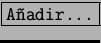

El mayor tráfico de Internet actual no es el producido por los programas de Web sino por el Correo Electrónico.
Para utilizar el correo electrónico hay que poseer una cuenta POP3 en algún servidor. Los datos importantes son:
Un programa bastante bueno de correos es el kmail se encuentra en K-Internet-Cliente de correo. La primera vez que es usado tiene que crear un directorio dentro del HOME para guardar los correos. (Fig. 6.9).
Luego aparece el menu de Opciones-Identidad (Fig. 6.10) donde hay que completar con los datos que van a aparecer en los emails a enviar. Existe una lengüeta Red, allí hay que poner SMPT como servidor de correos a enviar. Si bien en Linux viene un servidor de correos llamado sendmail que puede requerir mayor configuración y no esta dentro de los límites del curso básico.
También hay que añadir una cuenta POP llendo a . Aquí hay que completar con datos del servidor, como muestra la figura 6.11
Con estos datos sería suficiente como para enviar correos electrónicos y poder recibir. Un ejemplo terminado esta en figura 6.12
Un tema avanzado para este curso pero interesante para conocer y tenerlo en cuenta es la lengüeta PGP. PGP significa Pretty Good Privacy (privacidad bastante buena) que es el nombre de un programa de encriptación de mensajes para comunicaciones seguras. Es necesario tener instalado el programa pgp o bien la version GNU del que se llama gpg (este último lo recomendamos).
Al enviar el primer email va a pedir que introduzcamos un archivo de firma. Por ahora no existe ninguno, entonces con el editor de textos hay que escribir un simple archivo que contenga la firma. Por tradición se elige el archivo .signature porque varios programas de correos lo utilizan. De esta forma la firma será la misma no importa que cliente de correos estemos usando.